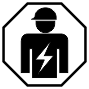

操作方法安全规定
National standards, regulations and legislation
西门子产品的开发和生产符合相关的欧洲和国际安全标准。如果操作地点适用有关产品规划、装配、安装、操作或处置的其他国家或地方安全标准或法规，则还必须将这些标准或法规与产品文件中的安全规定一起考虑。
Electrical installations
 WARNING
WARNING

电压
电击
- Work on electrical installations may only be carried out by certified electricians or by instructed persons working under the guidance and supervision of a certified electrician, in accordance with the electrotechnical regulations.
- Wherever possible disconnect products from the power supply when carrying out commissioning, maintenance or repair work on them.
- Lock volt-free areas to prevent them being switched back on again by mistake.
- Label the connection terminals with external voltage using a 'DANGER External voltage' sign.
- Route mains connections to products separately and fuse them with their own, clearly marked fuse.
- Use an easily accessible disconnecting device in accordance with EN IEC 62368-1 outside the installation.
- Produce earthing as stated in local safety regulations.
CAUTION

不遵守以下安全规定
人员受伤和财产损失的风险
- Compliance with the following regulations is required.
 |
如果安装不正确，可能会使电气安全预防措施失效，这对于非专家来说并不明显。 |
Mounting, installation, commissioning and maintenance
- Any tools such as ladders must be safe and designed for the task in question.
- When starting up the fire control panel, check that no unstable states can occur.
- Ensure that all the points listed under 'Testing and checking the product functions' are observed.
- Do not set controls to normal operation until you have tested and check all the product functions and handed over the system to the customer.
Testing and checking the product functions
- Prevent false triggering of the remote transmission.
- If you check building equipment or control devices from external companies, cooperate with the responsible contact persons.
- Neither personal injury nor damage to building equipment should occur when activating fire controls for test purposes. The following instructions must be followed:
- Use the correct potential (usually that of the building equipment).
- Check the controls only as far as the interface (relay with blocking option).
- Make sure that only the controls to be tested are activated.
- Inform others before testing alarm devices and anticipate that people might react in panic.
- Inform people about possible noise or fog that might occur.
- Inform the corresponding alarm and fault receiving stations before testing the remote transmission.
Modifications to the system design and the products
对系统和单个产品的修改可能会导致故障、故障和安全风险。如需修改或添加，必须获得西门子和相应安全机构的书面确认。
Modules and spare parts
- Components and spare parts must comply with the technical specifications defined by Siemens. Only use products specified or recommended by Siemens.
- Only use fuses with the specified fuse characteristics.
- Wrong battery types and improper battery changing lead to a risk of explosion. Only use the same battery type or an equivalent battery type recommended by Siemens.
- Batteries must be disposed of in an environmentally friendly manner. Observe national guidelines and regulations.
Disregard of the safety regulations
在交付之前，西门子产品都会经过测试，以确保它们在正确使用的情况下正常运行。对于因不正确应用说明或无视文档中包含的危险警告而造成的损坏或伤害，西门子不承担任何责任。这尤其适用于以下损坏：
- Personal injuries or damage to property caused by improper use and incorrect application
- Personal injuries or damage to property caused by disregarding safety instructions in the documentation or on the product
- Personal injury or damage to property caused by poor maintenance or lack of maintenance